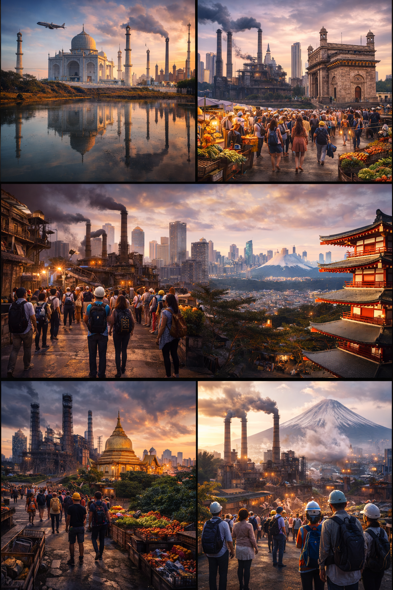

Where Tourism Meets Industry

Clean air, water, and surroundings are essential for places that attract large numbers of visitors. At the same time, manufacturing and production activities generate emissions, waste, and noise that must be carefully managed.
By applying algorithms, environmental impact can be monitored, analyzed, and minimized efficiently. Sensor data is continuously collected to detect pollution levels. Optimization techniques help select effective waste-treatment methods, while scheduling algorithms ensure emission-intensive activities occur at safer times.
Data from multiple locations is analyzed to identify sensitive zones, and places are ranked based on cleanliness and environmental quality.
Visitor movement creates demand for food, accommodation, transport, and local products. Meeting this demand efficiently requires careful planning of production, storage, and distribution systems.
Algorithms play a key role in forecasting demand, managing inventories, and scheduling services. Data-driven approaches help predict peak seasons, optimize supply chains, and reduce wastage. Recommendation techniques promote locally produced goods by matching preferences with availability.
Service systems are designed to handle large crowds efficiently, reducing waiting time and improving the overall experience.
Old production sites, factories, and mines hold historical and educational value. With careful planning, these spaces can be transformed into informative experience centers while ensuring safety and smooth visitor movement.
Graph-based methods are used to design optimal routes, manage visitor flow, and ensure important sections are covered within limited time. Risk analysis helps identify unsafe areas, while traversal techniques guide layout planning.